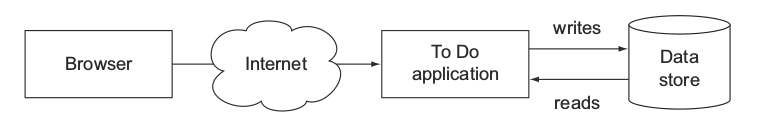

第一个Gradle项目
这一章将通过一个例子来介绍Gradle的强大特性，你将从中学到怎么用Gradle的标准插件来引导、配置和运行你的应用，这章结束的时候你应该对Gradle的工作机制有个清晰的认识。
The To Do Application
我们经常需要同时管理多个项目，有时候会发现多个项目很难维护达到了难以控制的地步，为了摆脱这个困惑，我们可以维护一个to-do列表，显然你可以把你所有要完成的任务写在一张纸上，当时如果能够随时随地查询你要完成的任务岂不更方便？
任务管理的情形
现在你知道了你的最终目的，每一个任务管理系统都是由一系列的任务组成的，任务通常有一个标题，任务可以添加到任务列表中，可以标记任务的完成状态以及删除任务，如下图所示：

实现用户交互功能
我们发现这个TO DO 应用包含典型的创建、读取、更新、删除操作(CRUD)，要持久化数据，你需要用一个模型来给任务建模，我们创建一个叫ToDoItem的Java类，一个POJO对象，为了简化这个应用，我们这里不采用数据库来存储，而是把数据存储在内存中，这很容易实现。实现存储接口的类是InMemoryToDoRespository,缺点就是你的应用程序关闭之后你就无法持久化数据了，后面我们会继续完善这个应用。
每一个标准的Java应用都有一个Main Class，应用程序的入口。这里的main class是ToDoApp,我们将会展现一栏的命令给用户选择，每一个命令被映射成一个枚举类型CommandLineInput,ComandLineInputHandler类用来处理用户输入执行相应的任务。 下图显示了整个流程：
搭建应用的每一个模块
表示Todo模型的类ToDoItem
package com.manning.gia.todo.model;
public class ToDoItem implements Comparable<ToDoItem> {
private Long id;
private String name;
private boolean completed;
(...)
}
模型持久化接口ToDoRepository
package com.manning.gia.todo.repository;
import com.manning.gia.todo.model.ToDoItem;
import java.util.Collection;
public interface ToDoRepository {
List<ToDoItem> findAll();
ToDoItem findById(Long id);
Long insert(ToDoItem toDoItem);
void update(ToDoItem toDoItem);
void delete(ToDoItem toDoItem);
}
接下来创建一个可扩展的、线程安全的实现：
package com.manning.gia.todo.repository;
public class InMemoryToDoRepository implements ToDoRepository {
private AtomicLong currentId = new AtomicLong();
private ConcurrentMap<Long, ToDoItem> toDos = new ConcurrentHashMap<Long, ToDoItem>();
@Override
public List<ToDoItem> findAll() {
List<ToDoItem> toDoItems = new ArrayList<ToDoItem>(toDos.values());
Collections.sort(toDoItems);
return toDoItems;
}
@Override
public ToDoItem findById(Long id) {
return toDos.get(id);
}
@Override
public Long insert(ToDoItem toDoItem) {
Long id = currentId.incrementAndGet();
toDoItem.setId(id);
toDos.putIfAbsent(id, toDoItem);
return id;
}
@Override
public void update(ToDoItem toDoItem) {
toDos.replace(toDoItem.getId(), toDoItem);
}
@Override
public void delete(ToDoItem toDoItem) {
toDos.remove(toDoItem.getId());
}
}
应用程序的入口
package com.manning.gia.todo;
import com.manning.gia.todo.utils.CommandLineInput;
import com.manning.gia.todo.utils.CommandLineInputHandler;
public class ToDoApp {
public static final char DEFAULT_INPUT = '\u0000';
public static void main(String args[]) {
CommandLineInputHandler commandLineInputHandler = new
CommandLineInputHandler();
char command = DEFAULT_INPUT;
while(CommandLineInput.EXIT.getShortCmd() != command) {
commandLineInputHandler.printOptions();
String input = commandLineInputHandler.readInput();
char[] inputChars = input.length() == 1 ? input.toCharArray()
char[] { DEFAULT_INPUT };
command = inputChars[0];
CommandLineInput commandLineInput = CommandLineInput.getCommandLineInputForInput(command);
commandLineInputHandler.processInput(commandLineInput);
}
}
}
到目前为止我们讨论了应用的组件和用户交互。接下来就要用Gradle实现项目的自动化构建，编译源代码、打包JAR文件、运行应用。